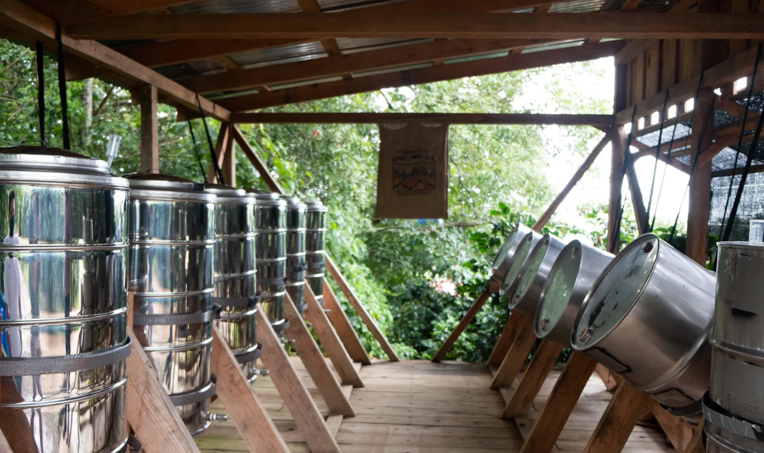

En un coup d'œil :
Process où cerises ou grains dépulpés fermentent en cuve hermétique, privés d'oxygène. Résultat : profils aromatiques précis et intenses (fruits fermentés contrôlés, notes vinées, acidité lactique). C'est le café où la biologie devient design sensoriel.
Comprendre : La fermentation pilotée
Le principe de l'anaérobiose
Sans oxygène, les levures changent de métabolisme :
Avec O₂ (aérobie) :
Glucose + O₂ → CO₂ + H₂O + Énergie
(Peu d'arômes, fermentation rapide)
Sans O₂ (anaérobie) :
Glucose → Éthanol + CO₂ + Esters + Acides
(Beaucoup d'arômes, fermentation lente)
C'est exactement le principe de la vinification en cuve inox.
Dans les années 2010, des producteurs colombiens et costaricains (Diego Bermudez, Camilo Merizalde) importent ces techniques œnologiques au café pour créer des profils reproductibles et complexes.
Anaérobie vs Natural : La différence clé
| Critère | Natural | Anaérobie |
|---|---|---|
| Environnement | Aérobie (air) | Anaérobie (O₂ <1%) |
| Lieu | Lits ouverts | Cuve fermée |
| Durée | 15–30 jours | 24–120h |
| Température | Variable | Contrôlée (15–28°C) |
| Micro-organismes | 100+ souches aléatoires | Sélection naturelle anaérobies |
| Profil | Fruité explosif, variable | Fruité contrôlé, vineux |
| Risque | Très élevé | Moyen |
En clair : L'anaérobie est un natural ultra-contrôlé et accéléré, où chaque variable est maîtrisée.
Les deux approches
Cerises entières :
•Plus de sucres (pulpe + mucilage)
•Fruité intense, vineux, corps dense
•Plus difficile à maîtriser
Dépulpé avec mucilage :
•Fermentation homogène
•Profil propre, élégant
•Plus facile pour débuter ✅
Maîtriser : Le protocole technique
Phase 1 : Récolte ultra-sélective
Objectif : Cerises parfaitement mûres (≥20 °Brix)
⚠️ CRITIQUE : L'anaérobie amplifie tout — qualités comme défauts.
Tri :
•Flottaison : éliminer tous les flottants
•Visuel : retirer surmûries, vertes, abîmées
•Test °Brix : ≥20°B idéal, 18–20°B acceptable
Phase 2 : Mise en cuve et création de l'anaérobiose
Équipement :
| Élément | Fonction |
|---|---|
| Cuve hermétique | Contenir fermentation (inox, plastique, barrique) |
| Valve de dégazage | Évacuer CO₂, bloquer O₂ (airlock type bière/vin) |
| Thermomètre | Sonde étanche, ±0,5°C |
| pH-mètre (optionnel) | Suivre acidification |
Protocole :
•Remplir à 80–90% (laisser espace pour CO₂)
•Fermer hermétiquement
•Installer valve de dégazage
•Laisser purger naturellement
Création de l'anaérobiose :
| Temps | O₂ résiduel | État |
|---|---|---|
| 0h | 21% (air) | Aérobie |
| 2–6h | 10–5% | Transition |
| 12–24h | <1% | ✅ Anaérobie stable |
Indicateur : L'airlock "bouillonne" (bulles CO₂) → fermentation active
Phase 3 : Fermentation — Le cœur du process
Durée typique :
•Cerises entières : 48–96h
•Dépulpé : 24–48h
Température cible :
| Plage T° | Profil | Risque |
|---|---|---|
| 15–18°C | Propre, floral, esters légers | Fermentation lente |
| 18–22°C | ✅ Optimal : fruité équilibré | Faible |
| 22–26°C | Vineux intense | Risque acétique |
| >28°C | ❌ Phenolic, swampy | Élevé |
Ce qui se passe biologiquement :
0–12h : Levures oxydatives
•Consomment O₂ résiduel
•Produisent CO₂ + chaleur
•Aldéhydes légers (miel)
12–24h : Levures fermentaires
•Métabolisme anaérobie activé
•Production massive éthanol + CO₂
•Formation esters clés :
•Isoamyl-acétate (banane, fruit rouge)
•Éthyl-butanoate (ananas, mangue)
•Acétate d'éthyle (fruit fermenté)
24–72h : Bactéries lactiques
•Glucose → acide lactique (douceur)
•Diacétyle (beurré léger)
•pH descend : 5,5 → 4,0–4,5
Suivi de la fermentation :
| Paramètre | Début | Milieu (24–36h) | Fin |
|---|---|---|---|
| pH | 5,5–6,0 | 4,8–5,2 | 4,0–4,5 |
| °Brix | 14–20 | 10–14 | 6–10 |
| T° interne | Ambiante | +2–4°C | Stable |
| Activité valve | Lente | ✅ Intense | Ralentit |
Indicateur de fin optimale :
•pH stabilisé 4,0–4,5
•Activité valve ralentie
•Odeur : fruité intense, légèrement alcoolisé, pas vinaigre
•Goût liquide : doux-acide, fruité (pas piquant)
Phase 4 : Vidange et lavage
Protocole :
•Ouvrir lentement (décompression CO₂)
•Récupérer liquide fermentation :
•Jeter (sécuritaire)
•Conserver pour réensemencer (backslopping)
•Rincer à l'eau claire jusqu'à disparition mucilage
•Égoutter
⚠️ Alerte : Odeur vinaigre/swampy → lot compromis
Phase 5 : Séchage post-fermentation
Important : Grain chargé en arômes volatils → séchage doux pour préserver.
Paramètres :
| Phase | Durée | T° max | Brassage |
|---|---|---|---|
| Initiale | 2–3 j | 30°C | 4–5×/jour |
| Intermédiaire | 3–5 j | 35°C | 3×/jour |
| Finale | 2–4 j | 40°C | 1–2×/jour |
Vitesse : <1,2% H₂O/jour (plus lent que honey/natural)
Méthode : Lits africains, ombre partielle
Phase 6 : Repos en parche
Durée : 4–8 semaines minimum
Évolution :
•Semaine 0 : Fruité explosif, volatile
•Semaine 4 : Notes vinées apparaissent
•Semaine 8 : Profil équilibré, complexe
Approfondir : Chimie et profil aromatique
Molécules clés formées
L'anaérobie produit massivement des esters avec profil "vineux" et "lactique".
| Molécule | Famille | Arôme | Anaérobie vs Natural |
|---|---|---|---|
| Acétate d'éthyle | Ester | Fruit fermenté, vin | 2–3× supérieur |
| Éthyl-lactate | Ester | Yaourt, douceur lactée | 5× supérieur |
| Isoamyl-acétate | Ester | Banane, bonbon | Similaire/supérieur |
| Acide lactique | Acide | Velouté, doux | 10× supérieur |
| Diacétyle | Cétone | Beurre, crème | 3× supérieur |
Les 3 profils types
| Profil | Conditions | Arômes |
|---|---|---|
| Fruité propre | 18–20°C, 24–36h | Fruits rouges, floral, esters légers |
| Vineux équilibré ✅ | 20–22°C, 36–48h | Fruits fermentés, lactique doux |
| Fermenté intense | 22–26°C, 48–72h | Alcoolisé, fruits noirs, rhum/porto |
Profil sensoriel comparé
| Attribut | Lavé | Honey | Natural | Anaérobie |
|---|---|---|---|---|
| Intensité | ⭐⭐⭐ | ⭐⭐⭐⭐ | ⭐⭐⭐⭐⭐ | ⭐⭐⭐⭐⭐ |
| Acidité | ⭐⭐⭐⭐⭐ | ⭐⭐⭐ | ⭐⭐ | ⭐⭐⭐ |
| Sucrosité | ⭐⭐ | ⭐⭐⭐⭐ | ⭐⭐⭐⭐⭐ | ⭐⭐⭐⭐ |
| Corps | ⭐⭐ | ⭐⭐⭐⭐ | ⭐⭐⭐⭐⭐ | ⭐⭐⭐⭐ |
| Fruité | ⭐⭐ | ⭐⭐⭐⭐ | ⭐⭐⭐⭐⭐ | ⭐⭐⭐⭐⭐ |
| Régularité | ⭐⭐⭐⭐ | ⭐⭐⭐ | ⭐⭐ | ⭐⭐⭐⭐ |
Descripteurs typiques :
•Fruits fermentés (prune, vin rouge, fruits noirs)
•Vineux élégant, notes porto/rhum doux
•Acidité lactique veloutée
•Corps dense, texture crémeuse
•Finale longue, complexe
En pratique : Roast tips pour Anaérobie
Comportement du grain
Structure : Similaire lavé/honey, mais chargé en esters volatils
Conséquence : Torréfaction modérée et constante pour préserver les arômes fermentaires sans les "cuire".
Profil recommandé (base Loring)
Charge : 190–195°C
↓
Drying : 4–5 min, ROR 20–24°C/min progressif
→ évaporer eau SANS volatiliser esters
↓
Maillard : 25–30%, ROR 10–14°C/min constant
→ équilibrer fermentation + notes grillées douces
↓
Premier Crack : 198–202°C
↓
Développement : 12–14% (court-moyen)
→ ROR 5–6°C/min, descente contrôlée
→ ⚠️ ÉVITER stall (≥2 min stationnaire)
↓
Drop : 200–203°C (filtre) | 203–206°C (espresso)
Pourquoi ce profil fonctionne
•Charge modérée : préserve esters volatils
•Maillard modéré : équilibre fruité fermenté + caramel
•Développement court-moyen : garde fraîcheur fermentaire
•Flux constant : évacuation contrôlée volatils
Deux profils selon usage
Filtre — Fermentation maximale
Drop : 200–202°C
Développement : 10–12%
Résultat : Fruité fermenté maximal, acidité lactique vive, vineux élégant
Espresso — Équilibre + corps
Drop : 204–206°C
Développement : 13–14%
Résultat : Fruité contrôlé, corps dense, douceur lactée, chocolat noir
Erreurs fréquentes
| Erreur | Symptôme | Correction |
|---|---|---|
| Charge trop chaude (>200°C) | Esters brûlés, fermé | Baisser 190–195°C |
| ROR trop élevé | Perte notes fermentaires | Modérer drying |
| Maillard trop long (>35%) | Fermentation masquée | Réduire 25–30% |
| Stall développement | Profil baked, éteint | Flux constant |
| Drop tardif (>208°C) | Vineux brûlé, amer | Drop 200–206°C max |
Les risques et défauts de l'Anaérobie
Défauts liés au process
| Défaut | Cause | Molécules | Notes | Prévention |
|---|---|---|---|---|
| Sour | T° >26°C ou durée excessive | Acide acétique | Vinaigre, piquant | T° 18–22°C, <72h |
| Swampy | Fuite O₂ ou contamination | Acide butyrique, H₂S | Marécage, soufré | Valve étanche, hygiène |
| Phenolic | Surchauffe ou contamination | Crésols, guaiacol | Médicinal, goudron | T° <25°C, sanitize |
| Over-fermented | Durée >96h | Éthanol excès | Alcoolisé agressif | Stopper pH 4,0–4,5 |
| Flat | T° trop basse | Peu d'esters | Tasse creuse | T° min 18°C |
Défauts liés à la torréfaction
| Défaut | Cause roast | Impact |
|---|---|---|
| Fermenté brûlé | Charge trop chaude | Vineux âcre, désagréable |
| Baked | Maillard insuffisant/stall | Fermentation éteinte, céréale |
| Chemical | Surchauffe finale | Phenolic, solvant |
Conclusion : L'Anaérobie comme innovation maîtrisée
L'anaérobie fusionne savoir-faire ancestral (fermentation) et approche scientifique (contrôle précis).
Ce qu'il apporte :
•Reproductibilité : mêmes paramètres = même profil
•Complexité maîtrisée : fruité + vineux + lactique, sans défauts
•Innovation sensorielle : profils impossibles autrement
•Risque modéré : plus sûr que Natural, plus expressif que Lavé
Ce que cela coûte :
•Infrastructure : cuves, airlock, thermomètres
•Savoir-faire technique : suivi pH, T°, timing précis
•Apprentissage : courbe 2–3 saisons
Comment cela fonctionne, en résumé : On place cerises/grains en cuve hermétique. L'O₂ disparaît en 12–24h. Les levures fermentent en anaérobie → production massive d'esters + acide lactique. On stoppe à pH 4,0–4,5, on lave, on sèche doucement.
Les résultats obtenus : Un café vibrant, vineux, aux notes de fruits fermentés élégants (prune, vin rouge), acidité lactique veloutée, corps dense. Profil signature, reproductible, idéal pour compétitions et micro-lots premium (86–92 pts).
Pour aller plus loin
Process connexes :
•Chapitre Process → Macération Carbonique : anaérobie + CO₂ saturé
•Chapitre Process → Lactic : anaérobie + inoculation LAB
•Chapitre Process → Levures : anaérobie + souches sélectionnées
Défauts :
•Chapitre Défauts → Sour, Swampy, Phenolic
Chimie :
•Chapitre Chimie → Formation esters en anaérobiose
•Chapitre Chimie → Acide lactique et perception veloutée
💡 Note de formation : L'anaérobie est le process "de transition" entre classique et expérimental. Le maîtriser est le prérequis avant d'explorer CM, levures sélectionnées ou co-fermentations. C'est où on apprend à lire une fermentation : observer pH, sentir l'évolution, comprendre quand stopper. Un bon anaérobie doit être surprenant mais équilibré — trop funky = raté ; plat = sous-développé. Le sweet spot est étroit mais gratifiant.